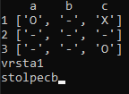
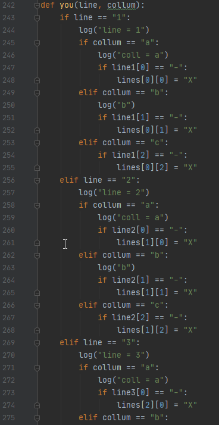

| Za postavitev krizca so zadolzene funkcije you, pressed in funkcija posameznega gumba. | |
VnosNa zacetku te, je funkcija you v konzoli vprasala, v katero vrstico bi rad postavil krizec in za tem v kateri stolpec. Kasneje pa je imel vsak gumb svojo funkcijo, ki je z "ime gumba".config() spremenila njegov napis na X in stanje na izklopljeno. Potem je pozval funkcijo pressed, ki je pozvala funkcijo you in zatem nadeljevala igro. |
|
|  | |
Shranjevanje v seznamSedaj je na gumbih pravi znak ampak v seznamu lists(v katerem sem shranil tri sezname, ki so predstavljali po eno vrstico) pa še ni bilo. Kar bi povzrocilo, da bi program lahko vstavil krogce tudi v ze uporabljene prostore.Da to popravi, je bila zadolzena funkcija you, ki je bila prvotno zadolzena tudi za vnos pozicije krizca, kar je razlog, da je prevelika zato, kar sedaj dela, ampak mi je zmanjkalo casa, da bi popravil. Vse kar mora narediti je, dobiti dve int vrednosti, ki povedo pozicijo vrednosti, ki jo more spremeniti. A ker je na zacetku ta funkcija morala tudi pregledati, ce je mozno postaviti tam krizec, sedaj deluje tako:
|
 |
| Sedaj vem, kako bi to lahko naredil z veliko manj truda in da bi program hitrejse delal, ampak popravilo tega sedaj vec ni potrebno, saj pohitritev programa ne bi nihce opazil. |